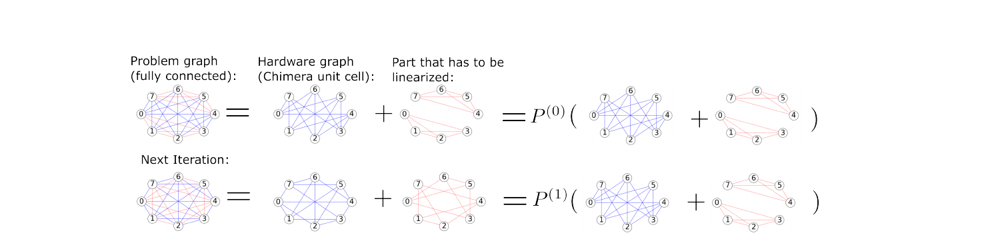
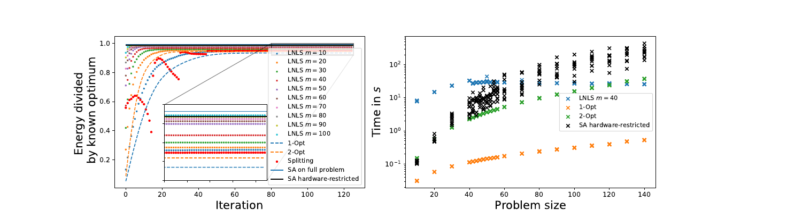
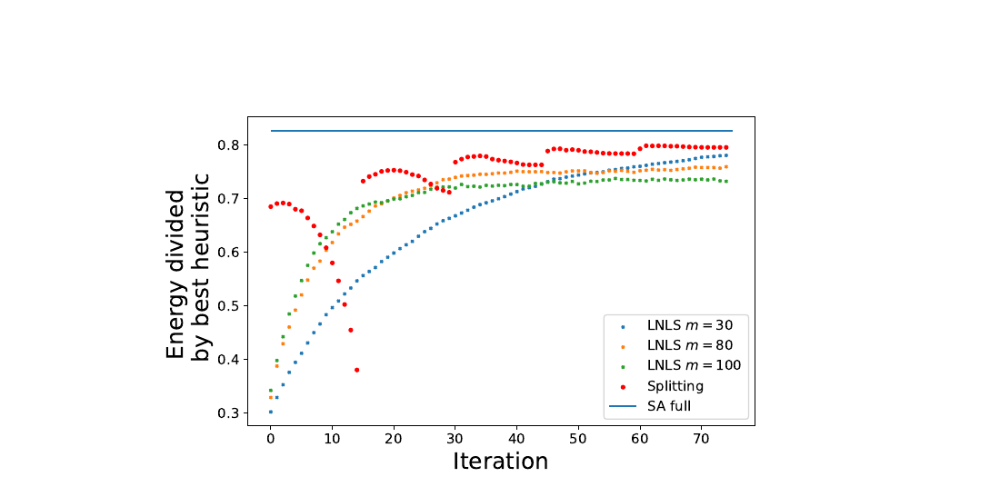

$x$ is a length-$n$ binary vector. $Q_{ij}$ encodes the pairwise interaction between variables $i$ and $j$.
Spins in $\{-1,+1\}$ match physical qubit states. Conversion: $s = 2x - 1$, with $A = Q/4$ and $b = Q\mathbf{1}/2$.
Bundle several physical qubits into a chain that acts as one logical qubit. A chain-strength penalty in the Hamiltonian forces all qubits in a chain to agree, creating virtual long-range couplings.
| Feature | Minor Embedding | Splitting (this paper) |
|---|---|---|
| Large problems | No ($\le 150$ vars dense) | Yes, any size |
| Preprocessing | NP-hard, minutes per instance | None |
| Extra qubits | Many (chains) | None |
| Guarantees | None | Weakly monotone energy |

The right-hand side is linear in $s$: just a fixed bias per qubit. No new coupling wires needed.
Penalises jumps where the Taylor approximation would break down. On $\{-1,+1\}^{n}$, the squared norm is constant, so this also reduces to a per-qubit bias.
Connection. Mathematically equivalent to proximal gradient descent on $\min f(s) + g(s)$ with $f(s) = s^{\top} A_L s$ and $g(s) = s^{\top} A_Q s + \mathbb{I}_{\{-1,+1\}^n}$. The main empirical competitor, LNLS, is the degenerate case where most variables are fixed.
A fixed split always linearises the same edges. A random permutation $P_k$ each iteration reshuffles which edges land on hardware:
Every edge of $A$ gets the exact treatment some of the time; error spreads evenly.
A variable only flips when its entry in the linear force vector changes sign. Only the midpoints between sorted $|L|$ entries give distinct iterates. Default: 15 candidates per iteration; keep the lowest-energy result.
Theorem. If $\lambda \ge \|2 A_{L}\|$, then $E(s^{(k+1)}) \le E(s^{(k)})$ for every $k$.
Taylor remainder theorem: for $\lambda$ large enough, the linearisation+damping surrogate is a safe upper bound.

